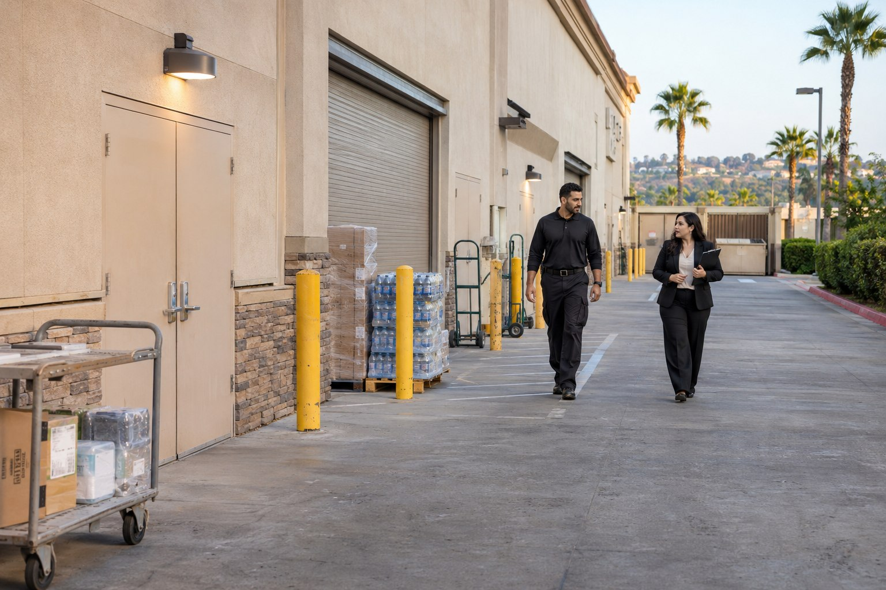

Shoppers Never See Your Service Corridors. Thieves Know Every One of Them.

From the front, a shopping center looks simple. Bright windows, clean walkways, music, families moving from store to store with bags in hand. That is the center the public knows. But every center in the Los Angeles area has a second geography behind the first one, a working world of service corridors, rear doors, delivery lanes, loading areas, and storage rooms that shoppers never see. The people who steal from retail centers know that second world well. In many cases, they know it better than the tenants who work there every day.
The back of a shopping center is not really one business. It is a shared passage used by every tenant on the row, plus delivery drivers, vendors, cleaners, maintenance crews, and contractors coming and going at all hours. Each store tends its own stockroom door and assumes the corridor itself belongs to somebody else. That assumption is the opening. A space that everyone uses and nobody owns, in the practical day to day sense, becomes a space where almost any person, any propped door, and any unusual movement can go unquestioned for a very long time.
The Center Has a Back Door for Every Store
Think about how much passes through the rear of a center before it ever reaches a shelf. Deliveries arrive early and late. Merchandise is unloaded, counted, stored, and moved forward in stages. Returns and damaged goods move the other way. Trash and cardboard go out. Cleaners come in after closing, vendors service equipment, and employees slip out the back on breaks. Every one of those movements is normal. Every one of them also teaches an observer exactly how the back of the center works, when it is busy, when it is empty, and which doors matter.
Rear doors multiply the problem because there are so many of them. A shopper entrance is designed to be noticed, staffed, and watched. A rear door is designed to be useful. It opens onto a lane or corridor where a person standing with a box looks like a worker, a person in a vest looks like a delivery driver, and a person walking with purpose looks like they belong to one of the dozen businesses sharing that passage. Retail security coverage of shopping centers identifies unmonitored service corridors, delivery docks, and back of house areas as common blind spots for unauthorized entry, after hours access, and tailgating, where one person follows another through a door that was only meant to open for one.
Tailgating sounds technical, but in a service corridor it is painfully ordinary. An employee holds a door because someone behind them is carrying something. A driver waves a stranger through because the stranger looks like staff from another store. A cleaner arrives, a vendor leaves, and in the small courtesies of a working morning, a person with no business in the building ends up inside it. No alarm sounds. No window breaks. The most common way into the back of a retail center is often just being polite at the wrong moment, repeated across dozens of doors and hundreds of daily openings.
Propped Doors and Shared Spaces Blur Every Line
Deliveries run on schedules, and schedules reward shortcuts. A door gets propped because the truck is late and the load has to move fast. A gate stays open because another delivery is expected soon. A stockroom door stands ajar while an employee makes repeated trips down the corridor. None of this comes from carelessness in any dramatic sense. It comes from ordinary people doing physical work under time pressure, in spaces where closing and securing every door, every trip, would slow the whole morning down. The trouble is that an open door does not know who it is open for.
Shared storage and service areas blur responsibility further. When several tenants use the same corridor, the same lane, and sometimes the same storage spaces, an unfamiliar face is almost impossible to place. Is that person with the restaurant, the salon, the clothing store, or no business at all? An employee who is unsure usually says nothing, because challenging a stranger who turns out to be a coworker from two doors down feels worse than minding their own business. Thieves rely on that hesitation. The shared back of a center gives them cover that no single store, watched by its own staff, would ever offer.
After hours, the blur gets worse. The storefronts go dark, the parking lot empties, and the rear lanes become quiet roads that few people can see from the street. Cleaners, security concerns aside, are focused on their own work inside individual stores. A vehicle moving slowly along a delivery lane at midnight draws little notice, because deliveries are the lane's whole purpose. Someone who learned the rhythm of that lane during the day, which doors, which cameras cover what, which stretches sit out of view, carries that knowledge into the night, when the same spaces are empty and the merchandise behind those doors has not moved.
Small Incidents Hide the Larger Pattern
Reducing risk in shared shopping center service areas
Property managers can make rear access management clearer without disclosing sensitive security details. Set written expectations for authorized deliveries, approved entry points, tenant communication and reporting of unusual activity.
Arrange a professional review of access control, patrol routes and incident reporting. Confirm that vendors and tenants know whom to contact when a shared area needs attention. Avoid publicly publishing precise camera positions, door weaknesses or patrol schedules.
The central question is ownership: who is responsible for reviewing shared spaces and following up on a concern that affects more than one tenant? A documented process can reduce gaps between individual storefront responsibilities.
One of the quieter dangers in the back of a center is how small the warning signs look. A rear door found unlocked in the morning. A box missing from a stockroom, written off as a counting error. A gate discovered open that everyone assumes someone else left that way. Retail security coverage notes that small undocumented incidents can hide larger patterns, and shopping centers are built, almost by accident, to keep those incidents separate. Each tenant sees only its own losses. The corridor where the losses connect belongs to no one, so no one is counting the whole picture.
That separation protects the people causing the problem. A thief working the back of a center does not need to hit one store hard. He can take a little from several, spread across weeks, moving through shared spaces where each individual loss looks like shrinkage, error, or an employee mistake. One store tightens its stockroom count. Another changes a lock. Meanwhile the corridor, the lane, and the rear doors stay exactly as they were, because no single incident was large enough to make the shared spaces themselves the subject. The pattern only becomes visible when somebody finally lays the separate stories side by side, and by then the center has usually been paying for it for a long time.
The Front Earns the Money, the Back Decides the Losses
None of this shows in the parts of a center that customers judge. Shoppers will never know that a rear door stood open all morning, or that a stranger walked a service corridor unchallenged, until the day an incident reaches the front of the store, a confrontation, a theft in view of customers, an emergency in a space nobody was watching. Then the two geographies of the center collide, and the hidden one suddenly defines the place in the public mind. The reputation a center spends years building from the front can be undone by the spaces behind it that almost nobody was treating as real.
That is the uncomfortable truth for shopping centers across the greater Los Angeles area and San Bernardino County. The storefront is where the money is made, but the corridors, lanes, and rear doors are where so much of the risk quietly lives, shared by every tenant and owned by none of them. It is the kind of problem Paradigm Security Services sees from the other side of the storefront, in the working spaces shoppers never enter. A center can look calm, bright, and well run from the parking lot, and still be wide open from behind, every single day, to the people who took the time to learn it.
ity
Discuss your project
Paradigm Security Services provides shopping center and commercial property security services. Request a Quote to discuss your site and coverage requirements.